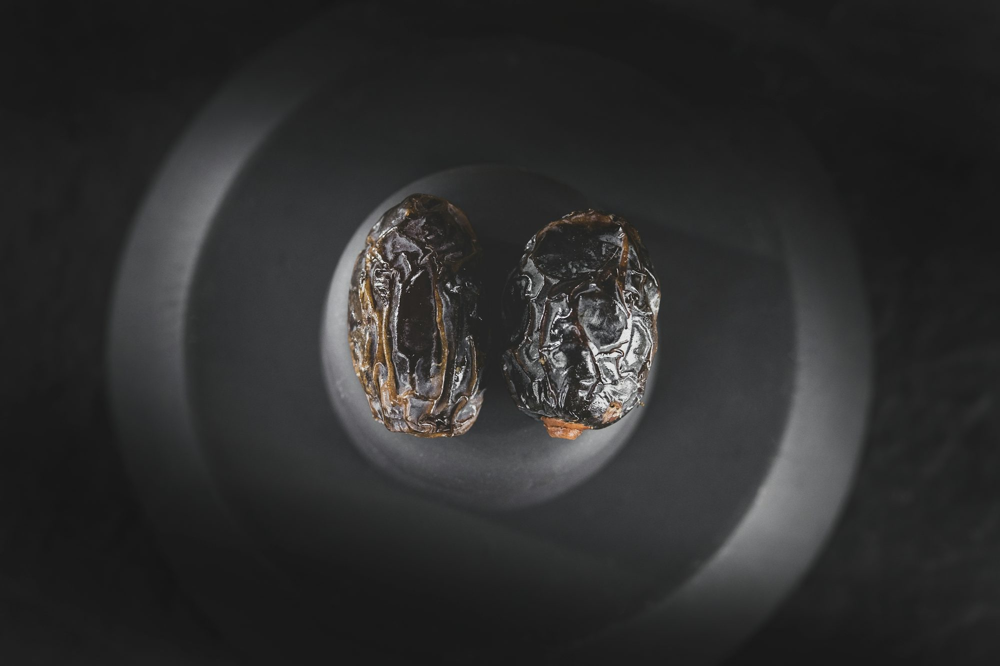
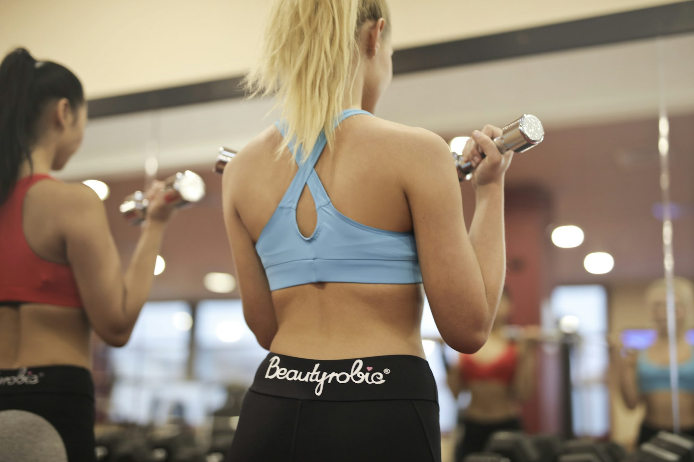
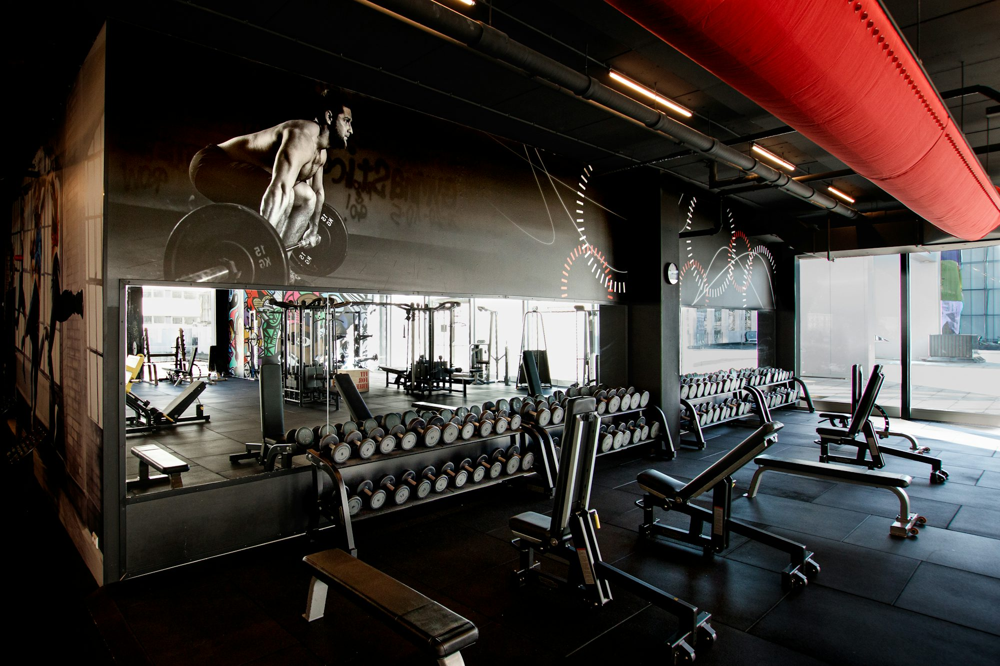
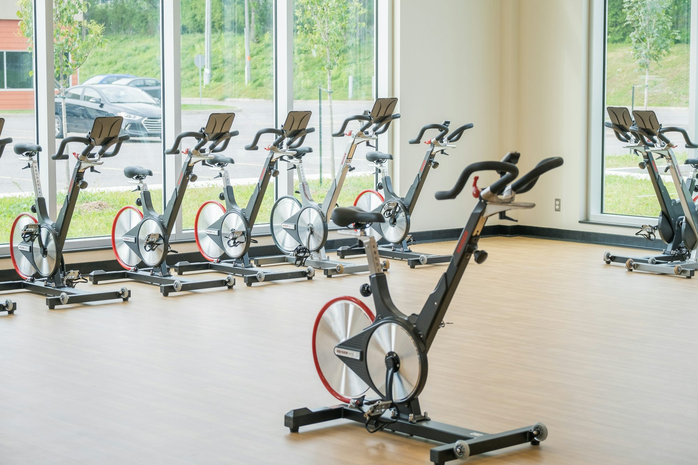
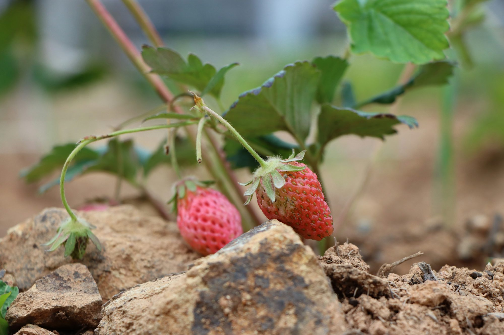
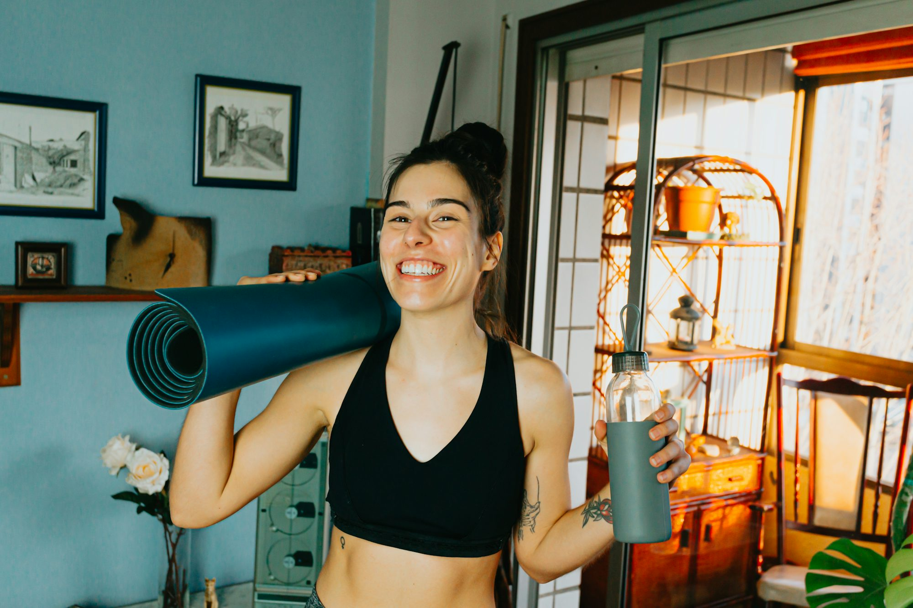
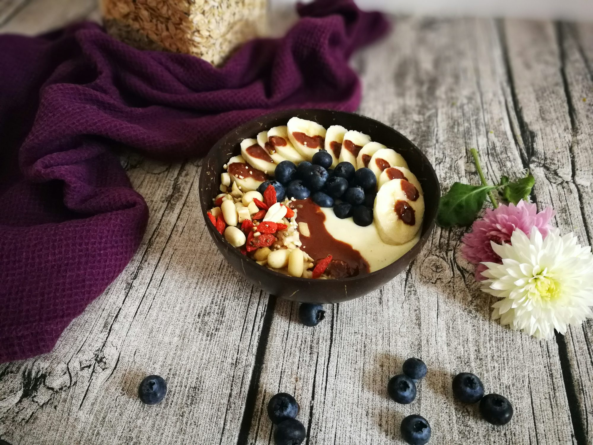

The Power of Nature: How Outdoor Activities Boost Well-Being
An exploration of the benefits of outdoor activities, discussing their positive effects on mental and physical health, and tips for incorporating nature into daily life.Pictures array



Write Us
Mastering the Art of Holistic Fitness: Integrating Nutrition, Movement, and Mindset for Optimal Health
This article explores the principles of holistic fitness, emphasizing the importance of combining proper nutrition, regular exercise, and mental well-being to achieve long-lasting health and fitness goals. It provides practical tips on how to integrate these elements into a balanced routine that supports both physical and mental well-being.
The Art of Sustainable Living: Practical Tips for an Eco-Friendly Lifestyle
This article explores the principles of sustainable living, its importance for the environment, and practical tips to help individuals adopt eco-friendly practices in their daily lives.
Oliver Schmidt
12/02/25



The Benefits of Mind-Body Exercises: Finding Balance and Wellness
This article explores the transformative effects of mind-body exercises, highlighting their benefits for mental and physical health, and offering practical tips for incorporating them into daily life.
Liam Thompson
04/19/25
